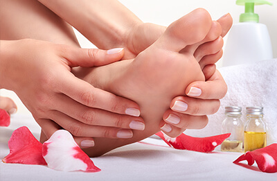

Toto je reklama
Jak se efektivně zbavit plísňové infekce: snadná metoda, která opravdu funguje

Ahoj všichni, to jsem zase já! Chci se s vámi podělit o svoji radost, konečně se mi podařilo zbavit se příšerné nemoci, kterou jsem trpěla. Stále si pamatuji všechny ty věci, které jsem zkusila, než jsem našla tuto fantastickou metodu.
Zhruba před rokem jsem psala příspěvek o tom, jak se mi ze života stala noční můra. Je mi 37 let, jsem krásná a mám spoustu obdivovatelů. Kdykoli jsem ale oslovila nějakého muže, co nejrychleji ode mě utekl. Jak je to možné? Problémem byla moje plíseň nohou. Nejprve jsem ji schovávala pod ponožkami, ale potom mi nohy začaly silně zapáchat. Kromě toho mě příšerně svědily a kůže se mi loupala stále víc. Bylo to nesnesitelné.
Minulý rok jsem vyzkoušela všechny možné metody. Už jsem ztratila přehled o všech lécích a přípravcích, které jsem užívala, ale v lepším případě měly jen dočasný účinek, v horším případě nepomohly vůbec. Nejsmutnější na tom bylo, že ani doktoři nevěděli, jak mi pomoct, a navrhovali mi extrémně drahé léky, všechny se spoustou vedlejších účinků. Nezbylo mi nic jiného než prodat auto a podstoupit kompletní léčbu německými antimykotiky. Během druhého měsíce léčby jsem začala trpět silnými bolestmi jater. Rozhodla jsem se tedy zůstat ošklivá, ale alespoň živá.
Tady je to, co mě zachránilo od plísňové infekce: cenově dostupný produkt
Tady je to, co mě zachránilo od plísňové infekce: cenově dostupný produkt Řešení jsem našla nečekaně. Stará známá mi řekla o certifikované podiatričce, která by mi mohla pomoci se této příšerné nemoci zbavit. Většinou nebere nové pacienty s plísněmi nohou, ale přesvědčila jsem ji tím, že jsem koupila nové nástroje, které mohla používat pouze na mně. Po kontrole mých nehtů mi řekla, abych zkusila produkt proti plísním . Podle ní by měl stačit týden a moje problémy by měly zmizet. Řekla mi, abych se objednala na kontrolu po této době. Také navrhla, abych si tento produkt koupila pouze na oficiální webové stránce distributora , abych měla jistotu, že nenarazím na nějaký padělek, který by mi mohl pouze ublížit.
Upřímně, ze začátku jsem jí nevěřila. Brala jsem to jako vtip a bála jsem se, že budu opět zklamaná. Pak jsem si ale přečetla spoustu pozitivních recenzí na tento produkt a rozhodla jsem se . zkusit. Nestojí moc peněz, tak jsem si říkala, že nemám co ztratit.
Balíček mi dorazil velmi rychle. Ihned jsem ho otevřela a začala si pročítat instrukce. Produkt funguje následovně:
- Zabíjí plíseň velmi rychle a zároveň regeneruje poškozenou pokožku a povrch nehtu.
- Ulevuje od podráždění a zarudnutí. Zklidňuje pokožku a vyživuje ji vitamíny a minerály.
- Má silný preventivní účinek. Předchází opětovnému vzniku infekce.
- Okamžitě ulevuje od pocení a nepříjemného zápachu nohou, čímž bojuje s příčinou problému.
- Ulevuje od otoků a normalizuje krevní oběh.
- Obnovuje elasticitu pokožky a dodává jí zdravý vzhled.
- Zpomaluje degeneraci kůže díky obsahu přírodních antioxidantů.
Plísňová infekce zmizí jednou provždy: výsledky jsou viditelné už po prvním týdnu.
Začala jsem používat podle pokynů na webové stránce distributora. . Používala jsem ho dvakrát denně: ráno před odchodem do práce a večer těsně před spaním. Upřímně jsem žádné velké výsledky nečekala. Ale už první den večer jsem byla ohromená. Poprvé po dlouhé době jsem po zutí bot necítila žádný zápach. Ponožky jsem měla suché a kůže nebyla zarudlá: dělá zázraky!
Po několika týdnech používání , jsem se úplně zbavila zarudnutí a loupání kůže. Všechna poškozená místa se zahojila mnohem rychleji, než jsem očekávala. A hlavně se mi začala regenerovat poškozená nehtová lůžka. Po měsíci používání nebylo po infekci, se kterou jsem bojovala několik let, ani stopy. Ošklivá chodidla, příšerný zápach a zarudnutí byly pryč! Kůže nohou se zcela obnovila a stala se jemnou, hladkou a hydratovanou.

Byla jsem taky příjemně překvapená tím, že tento antifungino obsahuje pouze přírodní ingredience a účinné antioxidanty, které pomáhají regenerovat pokožku a zpomalují stárnutí. Když budete krém používat preventivně, riziko plísňové infekce snížíte prakticky na nulu.
Konečně se cítím skvěle. Už nemám starosti, můj soukromý život se výrazně zlepšil, protože najednou nemám co skrývat.
Jen jedna věc: objednávejte pouze z oficiální webové stránky distributora . Na trhu jsou tisíce falešných produktů. Když kliknete na odkaz, který vám sem dám, budete si moci být jistí, že nevyhodíte peníze a svůj problém nezhoršíte.
Díky za vaši pozornost, milí čtenáři. Doufám, že vám můj příběh pomůže vyhnout se chybám, které jsem udělala já. Kdo by řekl, že mi bude trvat rok najít řešení svého problému, a pak se infekce zbavím za týden a půl? Doporučila jsem ho i své matce, aby se zbavila stejné infekce, která ji trápila už léta. Trvalo jí to jen dva měsíce. Většina vážných infekcí se obvykle léčí i déle.